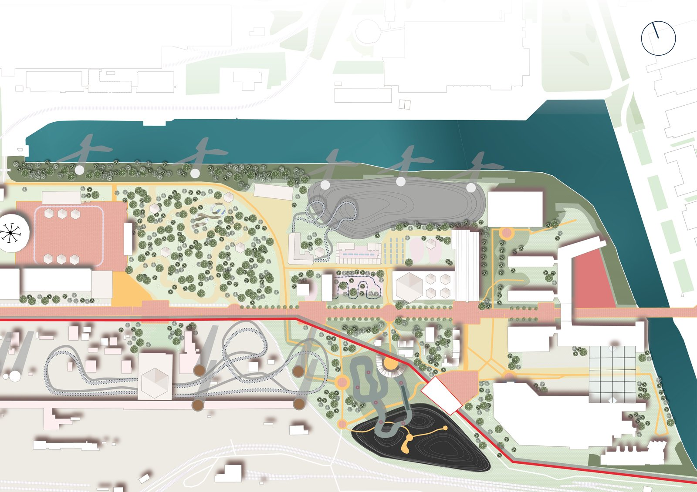
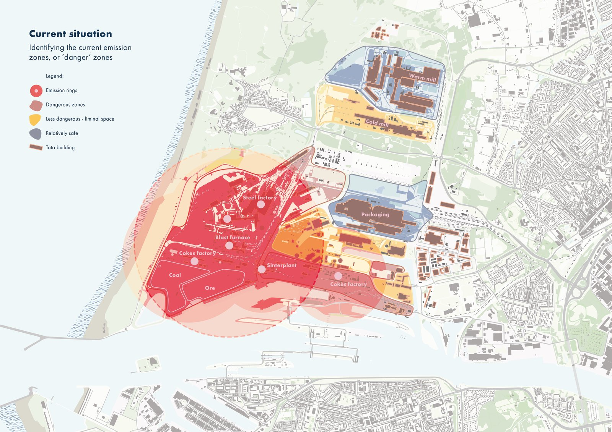
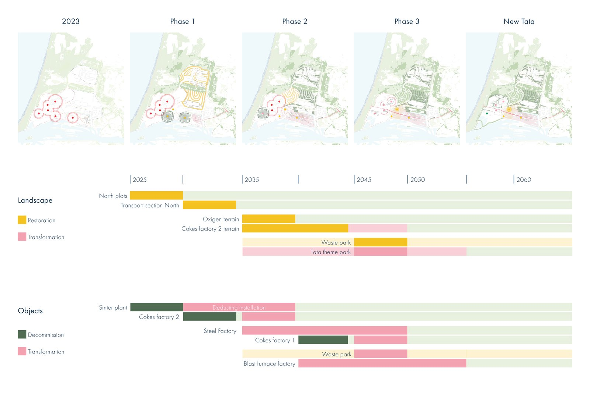
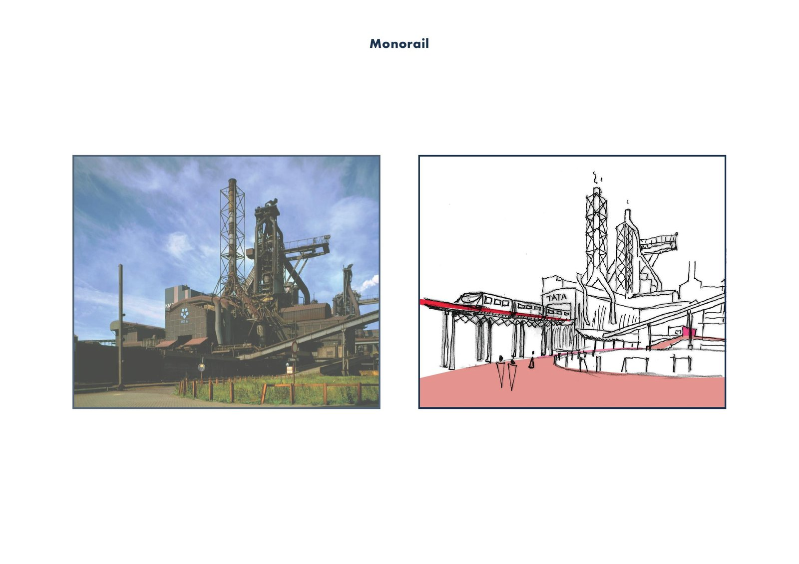
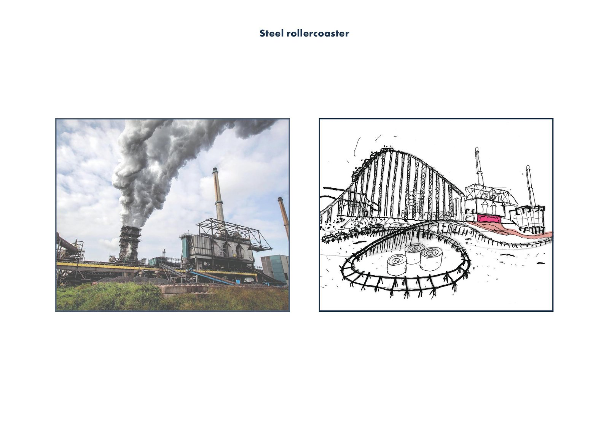
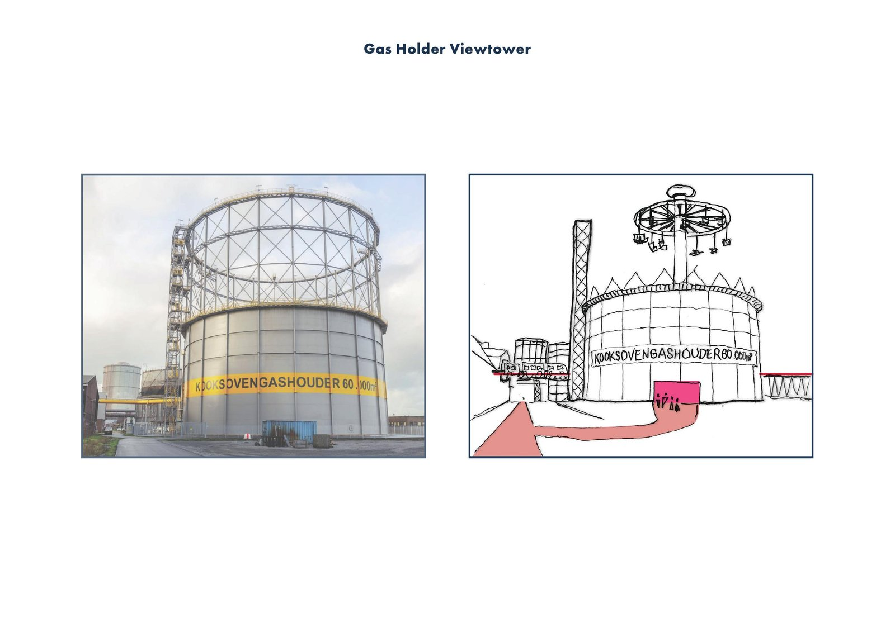

← Back to all projects

Tata Steel Reimagined
A theme park that changes the narrative of the Tata Steel plant.
A theme park that changes the narrative of the Tata Steel plant.
Steel is the great paradox of the energy transition: we need it for wind turbines and rail, yet producing it is among the dirtiest industries we have. In this studio project I took on the Tata Steel plant in the IJmond, one of the largest CO2 emitters of the Netherlands.
My proposal changes the narrative rather than the fence line. A phased transformation from 2023 to 2060 turns decommissioned factories into a theme park about steel, waste and energy, while the remaining plant converts to green steel and grows into a producer of green energy around an offshore wind hub. The park makes the transition visible, walkable and something to argue about.
Tutors: Eric Frijters and Taneha Kuzniecow Bacchin.





